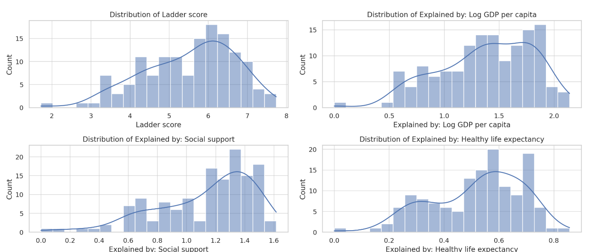
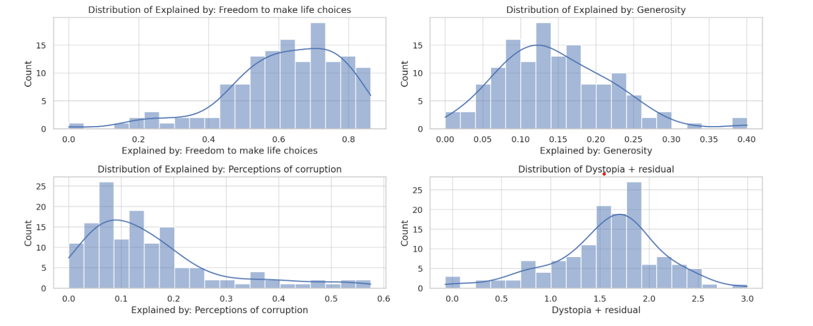
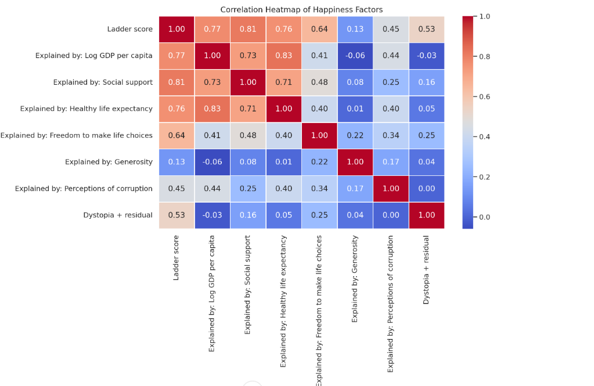
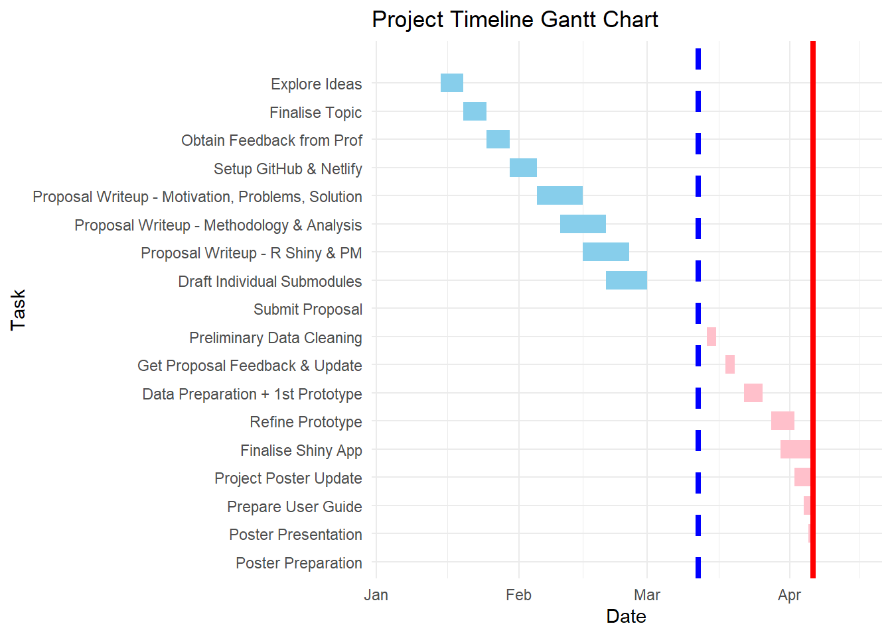

pacman::p_load(
tidyverse, # For data manipulation and visualization
readxl, # For reading Excel files
janitor, # For cleaning data (e.g., column names)
lubridate, # For handling date/time data
ggplot2, # For creating visualizations
dplyr, # For data manipulation
tidyr, # For reshaping data
tsibble, # For time series data manipulation
feasts, # For time series visualization & decomposition
fable, # For forecasting models
plotly, # For interactive visualizations
shiny # For building interactive web apps
)World Happiness Report (WHR) Analysis
1. Overview and motivation of project
Happiness is a key measure of societal well-being, influenced by both economic (e.g., GDP per capita) and non-economic factors (e.g., social support, freedom, and governance). However, understanding how these factors interact remains a challenge.
This project aims to analyze the strongest predictors of happiness using data from the World Happiness Report and develop an interactive visualization tool to explore these relationships. By making happiness data more accessible and insightful, this study supports evidence-based decision-making for policymakers and researchers seeking to enhance well-being worldwide.
2. Problem Statement
Happiness is a key indicator of societal well-being, yet its determinants remain complex and multidimensional. While many studies emphasize GDP per capita as a primary driver of national happiness, emerging evidence suggests that non-economic factors—such as social support, freedom, generosity, and perceptions of corruption—may play an equally or even more significant role. However, the absence of an intuitive and interactive way to explore these relationships makes it challenging for researchers, policymakers, and the public to derive meaningful insights from global happiness data.
Existing studies often focus on individual factors in isolation, making it difficult to understand how multiple dimensions interact to shape happiness levels across countries. A key challenge is identifying which factors contribute the most to national happiness and whether high-income nations consistently report greater life satisfaction than lower-income ones. Additionally, disparities between high-happiness and low-happiness countries remain poorly understood, particularly in terms of the role of governance, freedom of choice, and social support.
To bridge this gap, a structured and interactive analysis is needed to uncover the strongest predictors of happiness and allow for a comparative assessment of high- and low-happiness nations. By leveraging data on economic, social, and governance indicators, this research aims to provide a clearer, data-driven understanding of global happiness trends and facilitate more effective decision-making for improving well-being worldwide.
3. Data Collection & Processing
The following are the libraries we will be using for the project :
Reading the excel file
# Load the package
library(readxl)
# Set the file path (update this with your actual file location)
file_path <- "data_files/world_happiness.xlsx"
# Read the first sheet of the Excel file
happiness_data <- read_excel(file_path)
head(happiness_data)# A tibble: 6 × 11
`Country name` year `Life Ladder` `Log GDP per capita` `Social support`
<chr> <dbl> <dbl> <dbl> <dbl>
1 Afghanistan 2008 3.72 7.35 0.451
2 Afghanistan 2009 4.40 7.51 0.552
3 Afghanistan 2010 4.76 7.61 0.539
4 Afghanistan 2011 3.83 7.58 0.521
5 Afghanistan 2012 3.78 7.66 0.521
6 Afghanistan 2013 3.57 7.68 0.484
# ℹ 6 more variables: `Healthy life expectancy at birth` <dbl>,
# `Freedom to make life choices` <dbl>, Generosity <dbl>,
# `Perceptions of corruption` <dbl>, `Positive affect` <dbl>,
# `Negative affect` <dbl>This study utilizes data from the [World Happiness Report 2024] (https://worldhappiness.report/ed/2024/), specifically the Chapter 2 Appendix, which provides country-level happiness indicators over multiple years. The dataset includes economic, social, and governance-related factors that influence national well-being. The focus of this research is to analyze what constitutes a higher level of happiness across countries by identifying key contributing factors and their relationships.
The dataset contains 11 variables, each representing a different aspect of well-being:
- Country Name – The country or territory for which happiness data is reported.
- Year – The year in which the happiness and related indicators were measured.
- Life Ladder – A measure of subjective well-being, where individuals rate their life satisfaction on a scale from 0 (worst possible life) to 10 (best possible life).
- Log GDP per Capita – The logarithm of GDP per capita, adjusted for purchasing power parity (PPP), indicating the economic status of a country.
- Social Support – The national average response to whether individuals have friends or relatives they can count on in times of trouble.
- Healthy Life Expectancy at Birth – The expected number of years a newborn is likely to live in good health, based on WHO estimates.
- Freedom to Make Life Choices – The national average response to the question: “Are you satisfied with your freedom to choose what to do with your life?”
- Generosity – The residual of regressing national responses to the question “Have you donated to charity in the past month?” on GDP per capita.
- Perceptions of Corruption – The national average response to whether corruption is widespread in government and businesses.
- Positive Affect – The average of three measures of positive emotions: laughter, enjoyment, and interest in daily activities.
- Negative Affect – The average of three measures of negative emotions: worry, sadness, and anger.
By analyzing these variables, this research aims to uncover the strongest predictors of happiness and highlight the differences between high-happiness and low-happiness nations.
4. Methodology
This study employs a data-driven approach to analyze the key determinants of happiness across countries. The process includes:
- Data Collection & Processing: Gathering and cleaning data on happiness scores and factors such as GDP, social support, life expectancy, freedom, generosity, and corruption perceptions.
- Exploratory Analysis & Visualization: Identifying trends and correlations using descriptive statistics and visual analytics.
- Regression & Comparative Analysis: Examining the strongest predictors of happiness and comparing high- and low-ranking countries.
- Interactive Dashboard Development: Creating a user-friendly visualization tool using Shiny application to explore happiness trends dynamically.
4.1 Exploratory Data Analysis (EDA)
EDA is the first step in understanding the structure and patterns within the World Happiness Report dataset. The primary objectives of EDA in this project include:
Descriptive Statistics: Summarizing key variables such as Happiness Score, GDP per Capita, Social Support, and Life Expectancy to understand their distribution and central tendencies
- **Missing Values**
- 3 missing values in **GDP per capita, Social Support, Healthy Life Expectancy, Freedom to Make Life Choices, Generosity, Perceptions of Corruption, and Dystopia + Residual**.
- No missing values in **Country Name and Ladder Score**
- **Summary Statistics**
- **Ladder Score (Happiness Index)** ranges from **1.72** (least happy) to **7.74** (most happy), with an average of **5.53**.
- **Log GDP per capita** varies from **0.00** to **2.14**, implying diverse economies.
- **Social Support** has a strong influence, ranging from **0.00** to **1.61**.
- **Freedom to Make Life Choices** ranges from **0.00** to **0.86**, showing variation in personal freedoms.
- **Generosity & Perceptions of Corruption** have small values, indicating low levels of trust in many countries.Univariate & Bivariate Visualizations:
- Histograms & Density Plots – Distribution of Happiness Scores
knitr::include_graphics('plots/density-plots1.png')
knitr::include_graphics('plots/density-plots2.png')
Key Insights from Distributions: Ladder Score (Happiness Index):
Peaks around 5-6, meaning most countries fall within this range. Left-skewed, indicating some countries have very low happiness scores. GDP per Capita & Social Support:
Follows a normal distribution, with most values around 1.0 - 1.5 for GDP. Social support has a strong right tail, meaning some countries have very high support. Freedom to Make Life Choices & Generosity:
Freedom has a broad distribution but peaks around 0.6 - 0.7. Generosity is skewed left, meaning most values are quite low. Perceptions of Corruption:
Highly skewed left, showing many countries perceive corruption as a major issue.
Boxplots – Comparison of happiness scores across regions
happiness_data <- read_excel(file_path) %>% clean_names() # Clean column names
# Generate a Boxplot for Happiness Scores across Years
ggplot(happiness_data, aes(x = as.factor(year), y = life_ladder)) +
geom_boxplot(fill = "skyblue", color = "black") +
labs(title = "Happiness Score Distribution by Year",
x = "Year",
y = "Happiness Score (Life Ladder)") +
theme_minimal()
# Generate a Boxplot for GDP per Capita across Years
ggplot(happiness_data, aes(x = as.factor(year), y = log_gdp_per_capita)) +
geom_boxplot(fill = "lightgreen", color = "black") +
labs(title = "GDP per Capita Distribution by Year",
x = "Year",
y = "Log GDP per Capita") +
theme_minimal()
# Generate a Boxplot for Social Support across Years
ggplot(happiness_data, aes(x = as.factor(year), y = social_support)) +
geom_boxplot(fill = "lightcoral", color = "black") +
labs(title = "Social Support Distribution by Year",
x = "Year",
y = "Social Support") +
theme_minimal()
Correlation Analysis
To identify which factors have the strongest relationship with happiness.
o *Measure the Strength of Relationships* – Identify which factors (GDP per capita, social support, freedom, generosity, corruption perception, etc.) have the strongest positive or negative correlation with happiness.
o *Detect Key Influencers* – Determine whether economic factors (e.g., GDP per capita) or social indicators (e.g., social support, freedom) have a greater impact on happiness.knitr::include_graphics('plots/correlation-heatmap.png')
Correlation Insights:
Happiness (Ladder Score) has the strongest correlations with:
Social Support (0.81) → Countries with stronger support systems are generally happier. GDP per Capita (0.77) → Wealthier countries tend to be happier. Healthy Life Expectancy (0.76) → Better health leads to higher happiness. Weak or Negative Correlations:
Generosity (0.13) and Perceptions of Corruption (0.45) have low influence on happiness. Dystopia + Residual (0.53) captures unexplained variance, slightly correlated.
Geospatial Analysis:
Mapping happiness scores across countries to highlight global patterns
o *Identify Global Happiness Trends* – Highlight regions with consistently high or low happiness levels, revealing geographical clusters of well-being.
o *Compare Regional Differences* – Examine how happiness varies across continents and correlate findings with economic, social, and governance factors.4.2 Confirmatory Data Analysis (CDA)
Regression Analysis: Objective: Identify the strongest predictors of happiness by modeling the relationship between the dependent variable (Happiness Score/Life Ladder) and independent variables (e.g., GDP per capita, social support, freedom, corruption perception, etc.).
Method: Use Multiple Linear Regression (MLR) to quantify the impact of each factor on happiness scores. Perform Stepwise Regression to refine the model and select only the most significant predictors. Check for multicollinearity using Variance Inflation Factor (VIF) to ensure predictor variables are independent.
Outcome: A predictive model that explains which factors contribute the most to national happiness.
Feature Importance Analysis: Objective: Understand which variables influence happiness the most when applying non-linear models.
Method:
Train Random Forest Regression and compute feature importance scores. Use SHAP (SHapley Additive exPlanations) values to interpret how each feature contributes to happiness. Compare machine learning models (Random Forest, Gradient Boosting, etc.) to check if non-linear relationships exist.
Outcome: A ranked list of happiness predictors, identifying both strong contributors and lesser influential factors.
Clustering Analysis: Objective: Group countries based on similarities in happiness determinants to uncover hidden patterns.
Method:
Use K-Means Clustering to categorize countries into groups based on economic, social, and governance factors. Apply Hierarchical Clustering to visualize the relationships between similar countries. Perform PCA (Principal Component Analysis) to reduce dimensionality and highlight key differences.
Outcome: Clusters of countries with similar happiness profiles, allowing for comparative regional analysis.
Longitudinal Analysis: Objective: Examine how happiness scores evolve over time and assess the impact of global events (e.g., economic crises, political shifts, COVID-19 pandemic).
Method:
Use Trend Analysis with LOESS Smoothing to visualize long-term patterns. Apply ARIMA (AutoRegressive Integrated Moving Average) or Exponential Smoothing to forecast future happiness trends. Conduct Interrupted Time Series Analysis (ITSA) to measure the impact of specific events on happiness scores.
Outcome: Insights into how happiness levels have changed across different periods and predictions for future trends.
5.Dashboard Implementation
An interactive Shiny Dashboard will be developed with the following components:
- Comparison Dashboard
Purpose: Compare happiness scores and influencing factors across countries or regions.
📌 Layout:
Sidebar: Country/region selection, year filters. Main Panel: Side-by-side bar charts comparing happiness factors across selected countries. Radar chart to visualize multiple happiness indicators at once. Boxplots to compare score distributions by region.
- Factor Analysis Dashboard
Purpose: Show the influence of different factors on happiness scores.
📌 Layout:
Sidebar: Select variables (GDP, social support, health, etc.). Main Panel: Scatter plots with regression lines (showing correlation). Feature importance ranking using ML models (optional). Predicted happiness score calculator (users input GDP, social support, etc., to estimate score).
- Prediction Dashboard
Purpose: Show correlations between happiness scores and different factors + predict happiness.
📌 Key Features:
Scatter plots to visualize factor relationships ML-based predictions of happiness score Feature importance ranking
- Storytelling Dashboard
Purpose: Narrate the story of happiness using engaging visual elements.
📌 Layout:
Step-by-step insights with buttons/sliders: Users navigate through different insights. Illustrative charts with annotations (e.g., callouts explaining major dips/rises). “Did You Know?” pop-ups for user engagement.
6.Gantt Chart

7.Conclusion
By analyzing the World Happiness Report data through interactive visualizations, this project aims to provide deeper insights into the factors influencing well-being. The results will help policymakers, researchers, and the public make data-driven decisions to improve happiness worldwide.
Note: This is just proposal and final results may slightly differ.